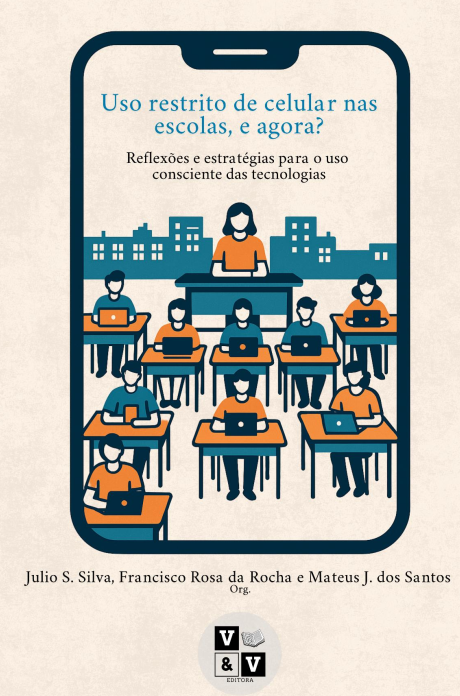
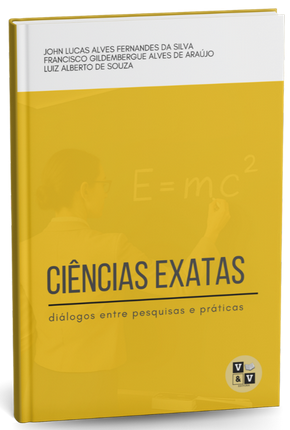
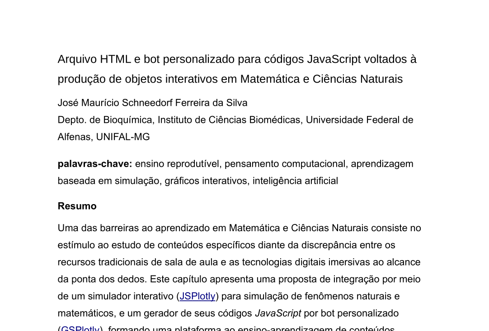
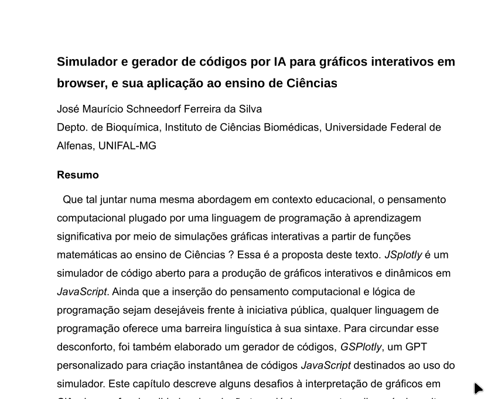

12 Potencial
JSPlotly — Características e Potencialidades
Acesso, simplicidade e portabilidade
- É gratuito;
- Não requer instalação;
- Não requer conexão de rede;
- Não requer configuração de máquina ou requisitos mínimos de hardware;
- Não requer dependências externas (ex: .NET, Java);
- Pode ser executado diretamente em navegadores como Firefox, Google Chrome, Microsoft Edge e Safari;
- Pode ser utilizado em computadores, smartphones ou via dispositivos removíveis (pendrive);
- Possibilidade de uso offline (Plotly.js carregado previamente ou no corpo editado do aplicativo);
- É distribuído como arquivo único HTML leve (< 30 kB);
- Pode ser aberto em qualquer visualizador HTML simples;
- Não requer treinamento prévio para uso inicial.
Estrutura tecnológica e arquitetura
- Baseado em linguagens amplamente utilizadas: JavaScript (programação), HTML (estrutura), e CSS (estilo);
- Integra a biblioteca Plotly.js (40+ tipos de gráficos e mapas);
- Código-fonte e saída gráfica coexistem em um único arquivo;
- Não requer motor externo para compilação, sendo interpretado em browsers modernos;
- Interpretado a partir de texto simples, com consumo mínimo de memória;
- Permite integração com outras bibliotecas JavaScript (ex: numjs, jStat, MathJax);
- Permite expansão modular e customização do ambiente;
- Independe de plataformas proprietárias;
- Integra desfazer ilimitado por editor de códigos.
Visualização e interatividade
- Produz gráficos 2D e 3D interativos;
- Permite geração de gráficos a partir de: equações, dados inseridos pelo usuário, ou mapas interativos;
- Permite exportação em PNG, SVG, e HTML interativo;
- Permite deslocamento e rotulagem de eixos diretamente no ecrã;
- Permite arrastar e personalizar a legenda diretamente no ecrã;
- Possui barra interativa inerente de
Plotly.js(zoom, pan, autoescala, exportação); - Permite interação direta com gráficos: tooltip de dados, zoom com mouse, manipulação de eixos, inserção de rótulos;
- Interface limpa e minimalista (editor + área gráfica + poucos botões);
- Permite personalização visual (cores, estilos, layouts).
Interatividade avançada
- Atualização em tempo real por eventos do usuário;
- Suporte a animações;
- Possibilidade de sonorização de dados;
- Permite construção de interfaces reativas;
- Permite integração com sensores e dispositivos físicos (celular, Arduino);
- Permite comportamento exploratório e experimental (laboratório virtual);
- Possui barra com inserção de ícones adicionais para manipulação do objeto criado (mudança de cor de linha, adição de texto, coordenadas de dados, desenho à mão);
- Permite edição gráfica adicional diretamente no aplicativo web Edit Chart Studio do distribuidor de
Plotly.js(ícone de barra); - Introduz elementos lúdicos (exploração por cliques, manipulação direta, desenho).
Potencial pedagógico e metodológico
- Faculta o uso em múltiplas metodologias ativas: PBL (Problem-Based Learning), PjBL (Project-Based Learning), CBL (Case-Based Learning), GBL (Game-Based Learning), e SBL (Simulation-Based Learning, Scenario-Based Learning - SBL);
- Favorece ensino reprodutível e pesquisa reprodutível;
- Insere o aprendiz em pensamento computacional;
- Facilita integração entre teoria e prática;
- Permite desenvolvimento gradual em lógica e e linguagem de programação;
- Conecta-se às competências digitais da Educação 4.0 e 5.0;
- Facilita interdisciplinaridade (STEAM);
- Pode ser usado em qualquer nível ou modalidade de ensino;
- Criação de “apps científicos portáteis” em HTML;
- Capacidade de sonificação de dados (didática inclusiva);
- Suporte a aprendizagem baseada em erro e tentativa (heurística);
- Potencial para acessibilidade (visual + auditiva);
- Uso como ferramenta de avaliação formativa interativa;
- Baixíssima barreira de distribuição (arquivo único);
- Possibilidade de versionamento simples (Git);
- Permite integração com Web Serial (cabo) / Web Bluetooth (IoT) para interfaceamento.
Tipos de objetos didáticos
- Gráficos interativos (2D e 3D);
- Mapas interativos;
- Simulações científicas;
- Animações (objetos, gráficos, mapas);
- Paineis (dashboards);
- Experimentos virtuais;
- Sonorização;
- Jogos educativos;
- Instrumentos musicais digitais;
- Objetos multimídia interativos;
- Games;
- Visualizadores de dados;
- Treinadores de programação;
- Interfaceamento com hardware (Arduino, sensores).
Compartilhamento e reprodutibilidade
- Arquivos autossuficientes e portáveis;
- Compartilhamento irrestrito do código (licença aberta);
- Pode ser incorporado em sites, materiais didáticos, e AVAs
- Compatível com ensino presencial, remoto e híbrido;
- Permite distribuição por redes sociais, e-mail, e plataformas educacionais;
- Facilita replicação de experimentos e objetos didáticos por envolver códigos de programação.
Integração com IA e automação
- Permite geração de código via assistentes de IA (ex: GSPlotly);
- Pode ser usado com qualquer IA generativa;
- Facilita criação rápida de protótipos;
- Permite evolução incremental de scripts;
- Reduz barreira de entrada para programação.
Licenciamento e filosofia aberta
- Licença CC BY-NC-SA 4.0;
- Código-fonte aberto;
- Compartilhamento irrestrito para fins educacionais;
- Alinhado com ciência aberta e educação abertas;
- Incentiva colaboração e remix.
Alcance e versatilidade
- Independe de área do conhecimento;
- Aplicável do ensino básico à pós-graduação;
- Utilizável em pesquisa científica;
- Permite criação de aplicações autônomas;
- Não limitado a matemática — aplicável em: ciências naturais, engenharias, saúde, humanidades (com mapas e dados).
Ecossistema e suporte
- Possui repositório aberto de exemplos (Bioquanti);
- Disponibiliza tutoriais e “livros vivos” (Bioquanti);
- Permite construção de objetos reutilizáveis;
- Favorece formação contínua do usuário.
…Em Suma…
Simplicidade: tamanho reduzido, design para usabilidade facilitada, e edição facultada em bloco de notas;
Agilidade: compilação rápida de códigos elaborados por bot de IA personalizado;
Praticidade: independência de especificações de hardware, de sistema operacional, e dispositivos tecnológicos;
Comodidade: ausência de instalações, tanto da ferramenta como de módulos acessórios;
Aplicabilidade: construção de objetos interativos para multiletramento e apropriação do pensamento computacional e programação diretamente em conteúdos curriculares;
Compartilhamento: licença ampla para reprodução, distribuição e modificação livres do código-fonte e de seus produtos, bem como atributo de arquivo permissivo para tráfego online (email, redes sociais);
Flexibilidade: possibilidade de personalização do código-fonte e do objeto interativo resultante, bem como para o uso de assistentes de IA variados;
Abrangência: uso em qualquer área ou temática do conhecimento, bem como para qualquer nível ou modalidade de ensino, e com extensão para pesquisa científica;
Escalabilidade: potencial para disseminação do aplicativo e de seus objetos por professores, alunos e gestores, em qualquer ambiente educacional ou domiciliar
12.1 Produtos
No prelo…



